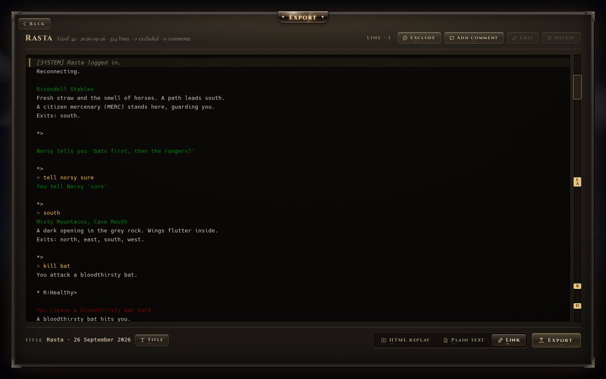

Throwaway mockups for the six points of stage 64 (share links), in the real look: the export editor and the Account page as captured from a dev server with the account API's e2e fake (flags accounts, sync, runs and share on), the HTML replay as built by the dev app; the new parts (the Link option, the share and report dialogs, the watch page, the published runs, the admin queue) drawn over and around them. Each picture opens that state in the one file; there the tabs switch point, variant and state, and Desktop / Phone the view. README.md beside this file has each variant, a recommendation per point and what did not fit.
Link is the third option of the format toggle (after HTML replay and Plain text, letter L), greyed for a guest. Pointing at it (desktop) or pressing it / L says “Log in to share” in the editor’s flash line.
Logged in: Link chosen. The file row says Title (a link has no file name or extension); Export opens the share dialog.
A guest sees only HTML replay and Plain text, and under the toggle a quiet line: “Log in to share a run as a link.”
Logged in: as a.
The first Create link of an account: the form with the rules in a well under it and a tick; Create link waits for the tick. The title is filled from the character and date (or the doc’s title when it has one).
Every later time: the form alone. Title and description as the player typed them; the size against 5 MB; the line that anyone with the link can watch it.
Create link pressed: stage 24’s bar in the dialog, the fields locked, Cancel still there.
The result: the link in a field of its own (selectable) with Copy, and where it can be found again. Done closes the dialog; the doc keeps no link.
The payload is built before Create link, so the size is known in the form: 6.3 of 5 MB, the button off, and what to do.
The server’s 413 pub_quota (or the account’s count known beforehand): the form’s error line and a way to the Account page.
No network when Create link is pressed: the error line; the form stays filled, Create link can be pressed again.
The first Export with Link opens the rules as a dialog of their own: the five lines, the tick, Continue. Once ticked (stored on the account) the form comes straight away.
The form, without the rules. Uploading, the link and the refusals are as in a.
As in a.
The meta comes first (GET /api/pub/
A band over the frame: the title, then the character and level, length, date, views and sender, the description in one line (the rest in a tooltip); Report, Download as HTML and Back on the right. The replay fills the rest, exactly as the HTML file looks.
A hidden run still opens for its sender, with a note saying why and that nobody else can watch it.
GET /api/pub/
451: hidden after reports or by the admin.
404 (an id that never was, or not of the pattern).
The flag share is off: every link says the same, nothing is asked of the server but /api/config.


The meta comes first (GET /api/pub/
The frame first, the whole width; under it a strip with the title, details and the description, and the three actions.
A hidden run still opens for its sender, with a note saying why and that nobody else can watch it.
GET /api/pub/


451: hidden after reports or by the admin.


404 (an id that never was, or not of the pattern).
The flag share is off: every link says the same, nothing is asked of the server but /api/config.
A section after Sync: each run on two lines (title and figures; the link with Copy, Edit and Remove). The hidden run says so in the warning colour. The count against 150 and the bytes under the list.
Edit: the title and the description in the kit’s dialog. The cut cannot change.
Remove asks first, and says what the link will say afterwards.
No published runs: one line saying where they are made.
The Account page gets one row: the count, the views, a hidden run named, and Published runs (U) to open the view.
A view of its own (Back to the Account page): the same rows with room for the description.
As in a, over the view.
As in a, over the view.
The row says “None yet”; the view is not opened.
Report (R) on the watch page, logged in: the four reasons as a list (one is chosen; the arrows walk it), an optional text of at most 500 characters, Send report. The replay pauses under it.
Sent: the thanks, and what happens next. Close.
The server’s 409 already_reported (or known from before): one line, Close.
A guest presses Report: log in to report, or write to the abuse address (people without an account). Log in goes to the start page’s Account (and back here after).
Reports first: open reports grouped by item, the most reported first; per item the title, sender and character, reasons with counts, the reporters, the newest text, Watch, and the actions. Then the totals and the newest admin_log rows; the stage 59 sections follow as today.
Every action asks first in a plain modal: what goes, and that the reports are marked handled. Delete (run or account) wants the item’s id or the account’s name typed.
No open reports: one line; the totals and the log as always.